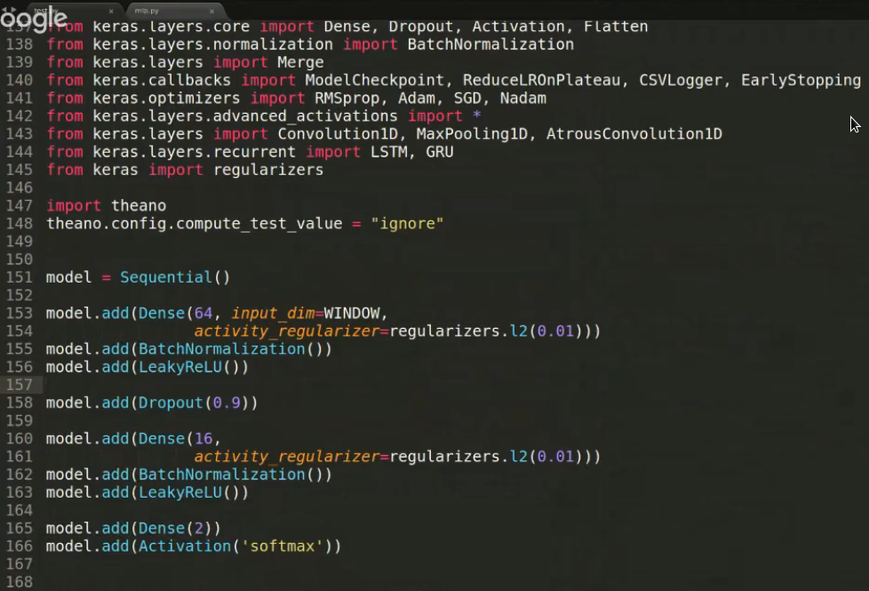
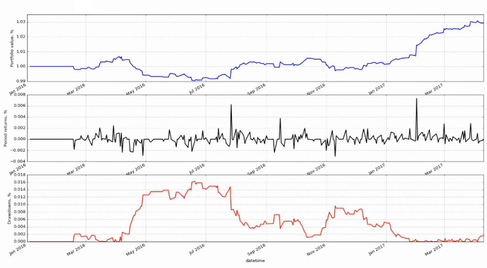
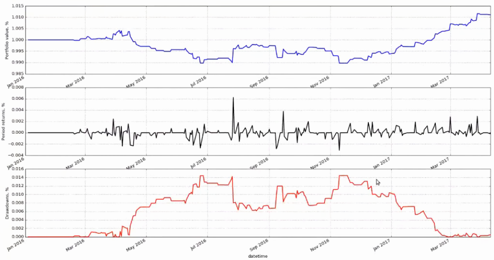

Автор видео использует python-фреймверки Theano и Keras. Пример кода:

Вот какие результаты предсказания обученной сети на реальных данных были получены.
На MPL-сети получено в денежном выражении 3% за полтора года. Графики имеют следующий смысл:

Результаты работы сверточной сети еще хуже, возможно, что она была переобучена. Сверточная сеть показала 1% прибыли за полтора года. Автор говорит, что у него в других задачах сверточные сети давали 5% в год.

Другими словами. Анализ ценового временного ряда ни к чему не приводит. Выхлоп минимальный. Требуется привязка к реальным индикаторам. Например, для анализа нефтянки требуется анализ погоды, температуры, сезонных изменений, новостей, и прочего.
Кусок обсуждения:
Прогнозировать только ценовой ряд не очень хорошая идея. Нужно с помощью машинного обучения сначала построить индикаторы и предикторы фундаментальных показателей, затем индикаторы новостного фона по данной компании и другим, с которыми она как-то коррелирует, затем нужно брать прогнозы и ожидания с других сайтов и учитывать их мнение, затем уже можно подмешивать технические параметры, цену, стандартные индикаторы и т.п. Так же, думаю, нужно мониторить и мерить геополитическую и экологическую и климатическую обстановку и т.д. Диверсификацию рисков тоже можно автоматизировать машинным обучением. И всё равно, с такой моделью будет сложно конкурировать с акулами рынка... Потратил 3 года на эти нейронные сети, генетические алгоритмы в трейдинге, и всё равно мой торговый робот показывал около нулевые результаты. Периодами хорошо шёл вверх, а иногда сливался, иногда по долгу топтался на месте, при том, что он непрерывно дообучался эволюционными алгоритмами на новых данных. У меня сложилось такое мнение, что поверх всех этих автоматизаций нужно садить ещё и нескольких экспертов, которые уже будут принимать окончательные решения. Вообще, если взять к примеру текущую ситуацию на рынке, скормить нейросетям все эти данные, нейросеть распознает какие-то паттерны, затем, если посмотреть вероятности срабатывания этих паттернов, то большинство из них будут все где-то рядом и одновременно. Рынок эффективен, на коротких интервалах времени выносит большинство таких алготрейдеров.